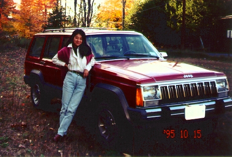

自己紹介(2) (95.10)

|
愛車のチェロキー（８９年型）です。９５年の８月に購入。いろいろ探し回って運良くかなり安く買えました。今のところ故障もしないで頑張ってくれています。ここの冬は雪も結構降るため、四輪駆動はありがたいの。道も広いし快適快適。 でも、メンテナンスは自分でしなくちゃいけないのでたいへんです。一度ブレーキがこわれかかっていたのに気がつかなくて、オイルチェンジの時に「こんなに変な音がしてるのにどうして気がつかなかったの」って聞かれました。大きい車は音もこんなものだと思って気にしなかったんですね(^^ゞ 。。。。タイヤの空気も自分で入れるんです。１ヶ月に１度、空気が抜けるのでそのたび入れてたのですが、それはおかしいそうです。この前、直してもらって、やっと今は普通に乗れてます。 次は何がおこるんだろう？ |

=家のすぐ近く、買ったばかりの頃(95.10)=
[ホームへ] [写真一覧へ]